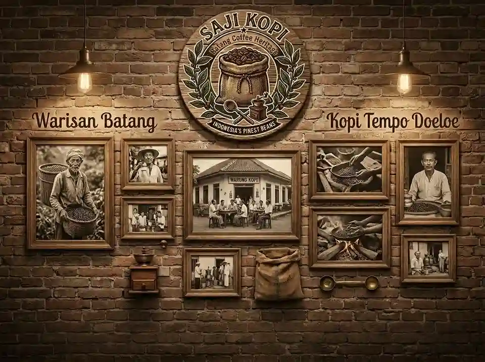
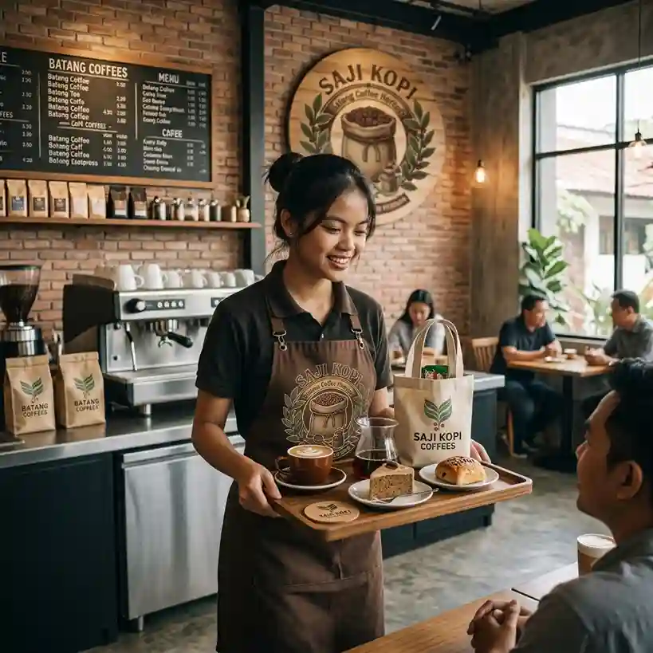
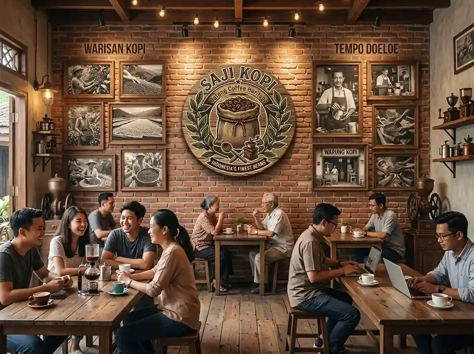
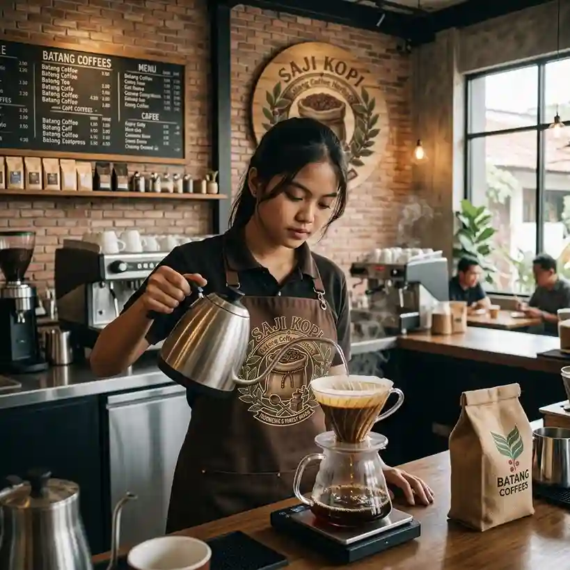
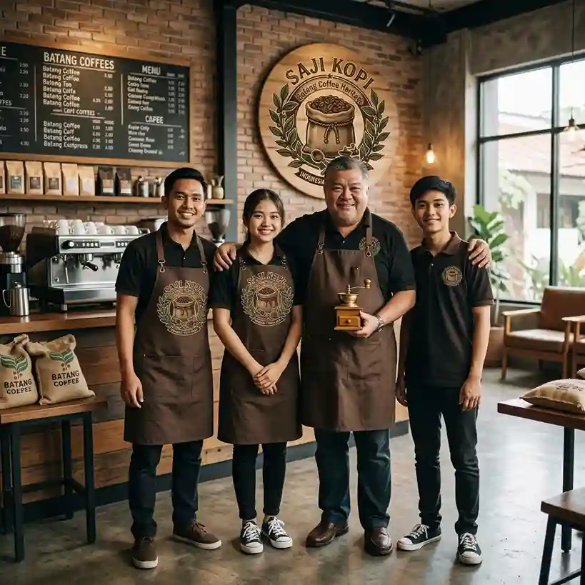

Batang Coffee Heritage
Galeri Kopi Saji
Sekilas produk, suasana kedai, dan orang-orang di balik setiap cangkir Kopi Saji.

Foto Produk
Beberapa foto dari biji kopi berkualitas Kopi Saji.


Suasana Kedai


Tim Kami
Orang-orang yang menyapa kamu setiap hari.


Video Profil Kedai
Sambutan Hangat Dari Tim Kami
Tempat Kita Kembali - Single by. Kopi Saji
Versi full akan diputar tiap satu jam sekali di Kopi Saji.